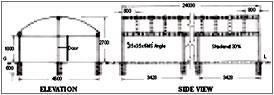
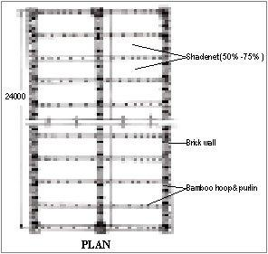
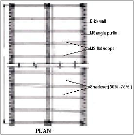

Need for a shade house in raising horticultural crops, selection of site, materials required for construction of basic model shade houses are described here
This topic covers the regulations and biosafety issues of transgenic crops.
A Shade house is a structure enclosed by agro nets or any other woven material to allow required sunlight, moisture and air to pass through the gaps. It creates an appropriate micro climate conducive to the plant growth. It is also referred as shade net house or net house.
The shade house structure should be planned taking into consideration the type of crop to be grown, locally available materials and local climatic conditions. The provision for future expansion should be there.
A shade house should be located in such a way that it is well connected with market for input supplies and sale of its produces. This structure should be constructed away from buildings and trees, so also away from industrial or vehicular pollutants. The site should be free from drainage problem. There should be provision of electricity and good quality water. However, wind breakers may be located 30m away from the structure.
There are mainly two criteria for shade house orientation. They are the uniformity of light intensity in the shade house and wind direction. Single span structure may be oriented either in east-west or north-south direction but multispan structure should be oriented in north-south direction to ensure uniform light intensity.
A shade house structure composed of two basic components i.e. frame and cladding material. The shade house frame provides support for cladding material and designed to protect against wind, rain and crop load. The shade house mild steel (ms) angle frame lasts up to 20 to 25 years, if anti rust treatment is done at regular interval, whereas bamboo structure can last up to 3 years. The agro shade net lasts for 3 to 5 years depending on the climatic condition. Shade nets are available in different colours with wide range of shade percentages viz. 25%, 30%, 35%, 50%, 60%, 75% and 90%.
The design of shade house frames depend on the need and engineering skill. Structural frames of quonset, gable or gothic arch shape or with minor modification suitable to local condition are recommended in high rainfall areas like Orissa.
Two types of shade house designs have been developed at Precision Farming Development Centre, Orissa University of Agriculture and Technology, Bhubaneswar. The principal advantage of these shade houses is that these structures do not require any welding at the site. Another advantage is that foundation posts have been chosen to protect these structures against termite attack. The details of these shade houses are mentioned below.
This design (Fig. 1) makes use of ms angle (35mm x 35mm x 6mm) and bamboo as structural frame. The ms angles are used as foundation posts with provision for grip at the bottom and ‘U’ clip for holding bamboo at the top. Bamboo is used both as purlin and roof structure. The levelling of shade house site is done followed by layout of the plan. The digging of pits for foundation posts are done, a portion of pits are filled with sand and compacted well. Then foundation posts are fixed with cement concrete, maintaining proper alignment in three parallel rows. After proper curing, bamboo sized to proper dimension is used as purlin, roof arch structure (hoops) and are tied properly. Pre-fabricated end frame and door frame are fixed to the structure with nuts & bolts. Then agro shade net of 50% - 75% is fixed to the roof and nets of 30% are fixed to the side frame. The in end frames and door are also covered with shade net. Lastly mid-pavement and boundary ridge line is constructed with brick masonary.
The unit cost of this type of shade house structure is about Rs. 225/Sqm. The materials used in this type of shade house are shown in table 1.
List of Materials (Shadehouse - I)
Sl. No. |
Particulars |
Item |
Specification |
Quantity |
1. |
Foundation Posts with "U" |
MS Angle Iron& |
35 mm x 35 mm x 6 mm |
209 Kg |
MS Flat |
25 mm x 6 mm |
7 kg |
||
2. |
Door System and end Frame |
MS Angle Iron |
35 mm x 35 mm x 6 mm |
71 kg |
3. |
Roof Structure |
Bamboo |
75 mm – 100 mm dia |
20 No |
4. |
Roof & Side Cover |
Agro shade net |
50% - 70% & 30% |
328 sqm |
5. |
Grouting of Foundation |
Cement Concrete |
1:2:4 with 12 mm chips |
1.3m3 |
6. |
Anti-Rust Treatment |
Enamel Paint & thinner |
- |
4 Litre |
7. |
Erection of Structure |
(i) Nuts & Bolts |
3/8”x1” |
1 kg |
(ii)GI Wire |
4 mm |
2 kg |
||
8. |
Pavement |
Brick Masonary |
Cement Mortar(1:6) |
2.4 m3 |
This design (Fig. 2) makes use of ms angle (40mm x 40mm x 6mm) for foundation posts, purlins, end frame and door of shade house structure. The ms flat is used for hoops to support the cladding materials. The foundation posts are having provision for fixing with purlin and hoops by nuts & bolts. Similarly ms flat used as hoops are having provision for fixing with purlin. The levelling and layout of plan at site is done as in previous case. The foundation posts are fixed to the pits with cement concrete and curing is done for seven days. The fixation of purlin, hoops, end frame and door frame are done by using nuts & bolts.



Then nets are fixed to the structure. Lastly mid-pavement and boundary ridge line is constructed with brick masonary. The unit cost of this type of shade house structure is Rs. 500.00 /Sqm. The materials used in this type of shade house are shown in table 2.
List of Materials (Shadehouse - II)
Sl. No. |
Particulars |
Item |
Specification |
Quantity |
1. |
Foundation Posts |
MS Angle |
40mm x 40mm x 6mm |
336 Kg |
2. |
Purlin & end Frame |
MS Angle |
40mm x 40mm x 6mm |
305 Kg |
3. |
Door Frame |
MS Angle |
40mm x 40mm x 6mm |
41 Kg |
4. |
Hoops |
MS Flat |
30mm x 6mm |
159 Kg |
5. |
Roof & Side Cover |
Agro shade net |
50% - 70% & 30% |
328 sqm |
6. |
Foundation Grouting |
Cement Concrete |
1:2:4 with 12mm chips |
1.8 m3 |
7. |
Pavement |
Brick Masonary |
Cement Mortar(1:6) |
2.4m3 |
8. |
Erection of Structure |
(i) Nuts & Bolts |
3/8”x1” |
4 Kg |
(ii) GI Wire |
4mm |
4 Kg |
||
9. |
Anti-Rust-Treatment |
Enamel Paint & thinner |
- |
8 Litre |
Source : NCPAH
Plant genetic engineering methods were developed over 30 years ago, and since then, genetically modified (GM) crops or transgenic crops have become commercially available and widely adopted in many countries. In these plants, one or more genes coding for desirable traits have been inserted. The genes may come from the same or another plant species, or from totally unrelated organisms. The traits targeted through genetic engineering are often the same as those pursued by conventional breeding. However, because genetic engineering allows for direct gene transfer across species boundaries, some traits that were previously difficult or impossible to breed can now be developed with relative ease.
The first-generation GM crops have improved traits like Herbicide-resistant crops (soybeans and maize, Pest resistance (Cotton and corn). Second-generation GM crops involve enhanced quality traits, such as higher nutrient content. “Golden Rice,” one of the very first GM crops, is biofortified to address vitamin A deficiency. Other biofortification projects include corn, sorghum, cassava, and banana plants, with enhanced minerals and vitamins. Crops can also be modified to ward off plant viruses or fungi. Even though the seed is more expensive, these GM crops lower the costs of production by reducing inputs of machinery, fuel, and chemical pesticides. Important environmental benefits, such as controlling farm runoff that otherwise pollutes water systems, are associated with reduced spraying of chemical insecticides and highly toxic herbicides.
Now-a-days with the rapid advance research and development in agricultural biotechnology, countries are approving many genetically modified crops for commercial release and agricultural production. ISAA reported in 2017, the 21st year of commercialization of biotech crops, 189.8 million hectares of biotech crops were planted by up to 17 million farmers in 24 countries. From the initial planting of 1.7 million hectares in 1996 when the first biotech crop was commercialized, the 189.8 million hectares planted in 2017 indicates ~112-fold increase.
In India, Bt cotton was approved by Government of India in March 2002 as the first transgenic crop for commercial cultivation for a period of three years. Apart from cotton, there are more than 20 crops under research and development in about 50 public and private sector organizations in India. Out of these, 13 crops have been approved for contained limited field trials in India.
Though, it is widely claimed that transgenic crops offers dramatic promise for meeting some of greatest challenges but like all new technologies, it also poses certain risks, because of the fact that transgenic crops can bring together new gene combinations which are not found in nature having possible harmful effects on health, environmental and non-target species. However, as more and more transgenic crops are being released for field-testing and commercialization, concerns have been expressed about the potential risks associated with their impact to human health, environment and biological diversity.
As more and more transgenic crops are released for field-testing and commercialization, concerns have been expressed regarding potential risks to both human health and environment. Biosafety describes the principles, procedures and policies to be adopted to ensure the environmental and personal safety. Recognizing the need of biosafety in GE research and development activities, an international multilateral agreement on biosafety “the Cartagena Protocol on Biosafety (CPB)” has been adopted by 167 parties, including 165 United Nations countries, Niue, and the European Union. The Protocol entered into force on 11 September 2003, and its main objectives are:
Research work in the area of GE and GMOs requires prior approval from the appropriate regulatory authorities of the country. Following guidelines provided for minimizing biosafety issues is mandatory. The primary regulatory body at research institute level is the Institutional Biosafety Committee (IBSC) or its equivalent body consisting of experts from different relevant disciplines. The IBSC ensures existence of the basic biosafety equipment required as per the safety level of the experiments to be conducted. There has been increasing awareness among the researchers, producers and users of GMOs, administrators, policy makers, environmentalists and general public about biosafety all over the world. Transgenic crops are not toxic nor are likely to proliferate in the environment. However, specific crops may be harmful by virtue of novel combinations of traits they possess. This means that the concerns associated with use of GMOs can differ greatly depending on the particular gene organism combination and therefore a case-by-case approach is required for risk assessment and management.
The major biosafety concerns falls into these categories:
Bio-safety of human and animal health
Ecological concerns
Environmental concerns
Public attitude
Socio economic and ethical consideration
Biosafety regulations cover assessment of risks and the policies and procedures adopted to ensure environmentally safe applications of biotechnology. The regulatory framework for transgenic crops in India consists of the following rules and guidelines.
a) Rules and policies
b) Guidelines
The two main agencies identified for implementation of the rules are the Ministry of Environment, Forests and Climate Change and the Department of Biotechnology, Government of India. The rules have also defined competent authorities and the composition of such authorities for handling of various aspects of the rules. There are six competent authorities as per the rules.
Out of these, the three agencies that are involved in approval of new transgenic crops are:
The Recombinant DNA Advisory Committee (RDAC) constituted by DBT takes note of developments in biotechnology at national and international level and prepares suitable recommendations. The State Biotechnology Coordination Committees (SBCCs) set up in each state where research and application of GMOs are contemplated, coordinate the activities related to GMOs in the state with the central ministry. SBCCs have monitoring functions and therefore have got powers to inspect, investigate and to take punitive action in case of violations. Similarly, District Level Committees (DLCs) are constituted at district level to monitor the safety regulations in installations engaged in the use of GMOs in research and application.
References
Source: Usha Kiran Betha, ICAR-Indian Institute of Oilseeds Research, Rajendranagar, Hyderabad